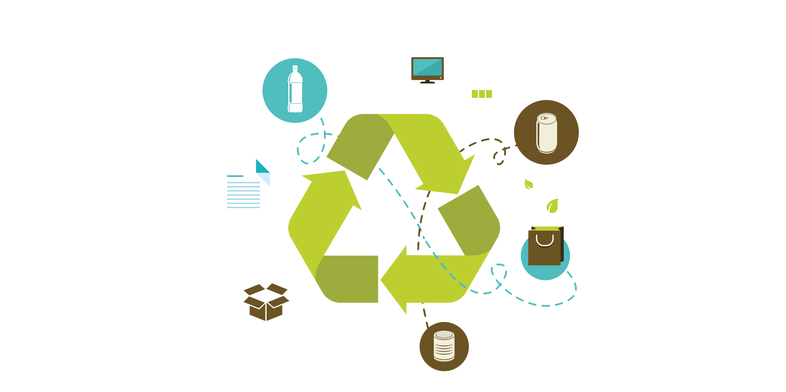

Conheça nosso projeto Smart Trash!
A Smart Trash é o principal projeto da Ambitec. Ela consiste em uma lixeira com um sensor
de aproximação que emitirá por meio de uma caixa de som um elogio, uma curiosidade ou um
agradecimento ao usuário que jogar o lixo corretamente.
É notório que ao receber um elogio, as pessoas tendem a repetir tal prática uma vez que
receberam um julgamento positivo em relação aos seus atos.
Além disso, é de suma importância para a autoestima das pessoas terem este reconhecimento,
podendo influenciar até na forma como ela irá lidar com o resto do seu dia.
AmbiTec. Soluções tecnológicas, sustentáveis e pessoais
AmbiTec é uma empresa nova que busca trazer soluções tecnológicas para o desenvolvimento
sustentável. Nos importamos com o Meio Ambiente e com as pessoas, uma vez que pertencemos
todos a este planeta incrível que é a Terra.
Com os constantes danos ambientais, a natureza precisa das pessoas para voltar ao seu
estado original, e nós humanos precisamos do Meio Ambiente bem desenvolvido para
sobrevivermos, por isto queremos criar essa relação entre pessoas e meio ambiente.

.png)